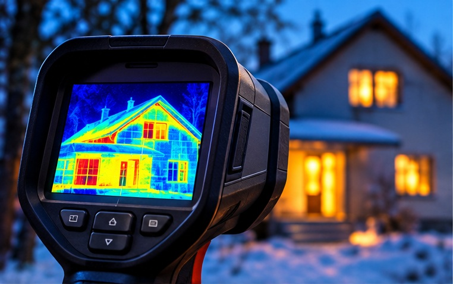

Побачити невидиме
Чи завжди тепловізор показує справжню температуру?

Наукова схема

Дві поверхні мають однакову температуру, але тепловізор показує різні числа. Ваше завдання — з’ясувати причину та навчитися перевіряти висновки за невидимим випромінюванням.
Коротка теорія
Абсолютно чорне тіло випромінює спектр, який описує закон Планка. Закон зміщення Віна: λmax = 2897,77/T (мкм, T у кельвінах). Закон Стефана — Больцмана: M = σT⁴, σ = 5,670374419·10⁻⁸ Вт/(м²·К⁴). Реальні непрозорі поверхні випромінюють і відбивають випромінювання оточення. У спрощеній широкосмуговій моделі L/σ = εT⁴ + (1−ε)Tоточ⁴. Це не калібрувальна модель конкретного тепловізора: реальні прилади враховують спектральну чутливість, атмосферу та оптику.
01. Де ховається максимум?
Передбачте, чи потрапить максимум випромінювання тіла при 20 °C у видимий діапазон 0,38–0,75 мкм. Знайдіть температуру, за якої максимум буде близько 10 мкм. Перевірте щонайменше три температури.
| °C | Максимум, мкм | Потік, Вт/м² |
|---|
02. Одна температура — різні покази
Дві непрозорі пластини мають 50 °C. Одна матова (ε=0,95), друга блискуча (ε=0,10). Змінюйте температуру оточення, а не пластин. Знайдіть умови, коли блискуча пластина здається гарячішою за матову. Поясніть, чому.
| Оточення | Матова | Блискуча |
|---|
03. Колір — не температура
Перед Вами синтетична термограма панелі з ділянкою локального нагрівання. Змініть палітру та діапазон відображення. Натисніть на три точки. Чи змінюється виміряна температура, якщо змінити колірну шкалу?
| Точка | Шкала | Температура |
|---|
04. Розслідування: нагрів чи відбиття?
На металевому корпусі прилад показав 58 °C, а на матовій стрічці, яка досягла теплової рівноваги з корпусом, — 32 °C. Модельні дані: ε металу 0,12, ε стрічки 0,95, температура відбитого оточення 62 °C. Прилад умовно налаштований на ε=1. Оцініть температуру корпусу за обома вимірами та порівняйте.
Через округлення показів оцінки можуть відрізнятися. Низька ε робить обернену задачу особливо чутливою до похибок.
Наука навколо Вас
Знайдіть звичайний інфрачервоний пульт дистанційного керування. Спрямуйте його на камеру смартфона й натисніть кнопку. Порівняйте основну і фронтальну камери. Не всі камери пропускають ближнє ІЧ-випромінювання. Це не тепловізійне спостереження: пульт випромінює ближнє ІЧ, а тепловізори зазвичай працюють на значно довших хвилях.
Якщо пульта немає, проаналізуйте модельні спостереження: камера А — спалахи видно, камера Б — не видно, пристрій реагує на пульт в обох випадках. Запропонуйте пояснення та контрольний дослід.
Цікавинка: звичайне віконне скло пропускає видиме світло, але зазвичай непрозоре для довгохвильового ІЧ-випромінювання. Тепловізор не бачить крізь таке скло так, як звичайна камера.
Професійний вимір
Теплова діагностика електроніки, дослідження матеріалів, енергоефективність будівель, оптичні сенсори та обробка сигналів — приклади задач прикладної фізики.
ФТІ КПІ · ФТІ школаПідсумок
Дані та висновки залишаються у Вашому браузері; нічого не надсилається на сервер.